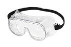
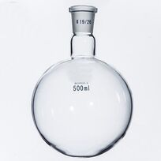
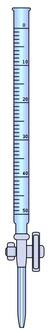

Laboratorijas trauki un piederumi

Aizsargbrilles

Apaļkolba

Atdalāmā piltuve

Bihrena piltuve

Birete

Bunzena kolba
Laboratorijas trauki un piederumi
Aizsargbrilles
Aizsargbrilles lieto acu aizsargāšanai, veicot ķīmijas eksperimentus.a